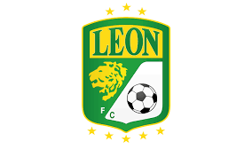

Bienvenido a la página del León FC
¡Aquí encontrarás toda la información sobre nuestro equipo!

El Club León, simplemente conocido como León o con alguno de sus motes como Esmeraldas, Panzas Verdes o la Fiera, es un club fundado el 31 de agosto de 1943, pese a que la fecha oficial de su fundación es el 20 de agosto de 1944. Sin embargo, la segunda fecha corresponde a su debut en Primera División, pero no a su fundación, ya que, incluso, ellos debutan formalmente en la Copa México 43-44. Con 17 títulos en su palmarés (7 Liga, 5 Copa y 5 Campeón de Campeones), juegan en la ciudad homónima, en el estado de Guanajuato. Uno de los principales responsables de su creación, y miembro de la primera directiva, fue el ex futbolista de las Chivas del Guadalajara, don Rafael Higinio Orozco.